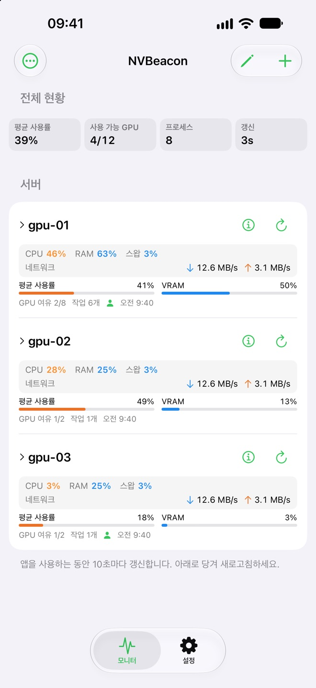
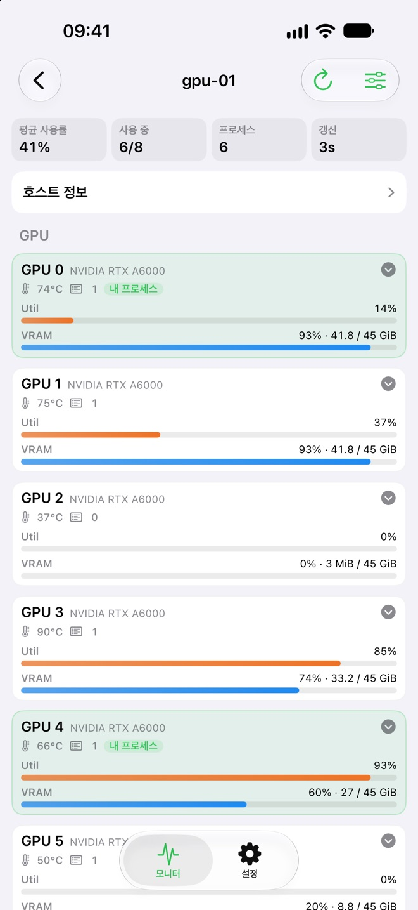
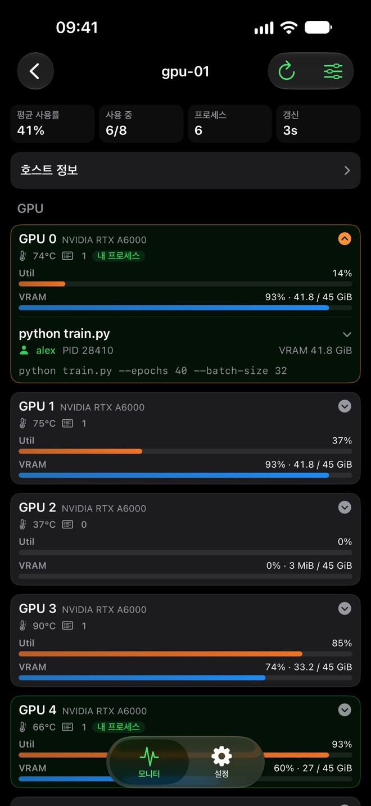
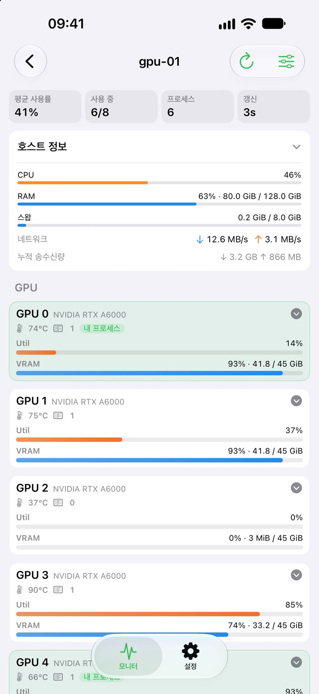
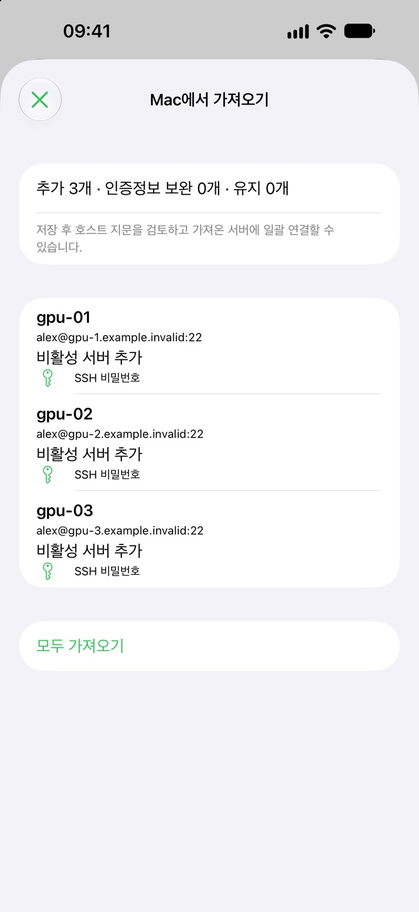

서버가 바쁜가요?
모든 GPU의 사용률, 메모리, 온도, 프로세스 수를 보여주고 메뉴 막대에 요약을 띄웁니다.
nvidia-smi
무료 · 오픈 소스 · 서버 설치 없음
NVBeacon은 SSH로 nvidia-smi를 실행해 모든 GPU의 사용률과 메모리,
누가 무엇을 돌리는지 보여줍니다. Mac 메뉴 막대에서, 그리고 iPhone과 iPad에서.


작동 방식
서버에 로그인해 nvidia-smi를 실행할 수 있다면 NVBeacon을 바로 쓸 수 있습니다.
호스트, 사용자, 포트를 입력하거나 Mac에서는 ~/.ssh/config에서 가져옵니다. SSH 키와 비밀번호를 모두 쓸 수 있습니다.
새로 고칠 때마다 SSH 명령 하나로 nvidia-smi를 실행하고 /proc/meminfo 같은 Linux 정보를 읽습니다.
사용률, 메모리, 온도, 프로세스가 메뉴 막대나 iPhone에 바로 나타납니다. 서버는 원하는 만큼 추가할 수 있습니다.
기능
모든 GPU의 사용률, 메모리, 온도, 프로세스 수를 보여주고 메뉴 막대에 요약을 띄웁니다.
GPU 프로세스마다 사용자, PID, GPU 메모리, 전체 실행 명령까지 보여줍니다. 내 작업은 강조 표시됩니다.
프로세스, 메모리 사용량, 사용률 중 무엇으로 사용 중을 판단할지 고를 수 있습니다.
CPU, RAM, 스왑, 네트워크 속도를 접을 수 있는 한 구역에 모았습니다. 필요 없는 지표는 끌 수 있습니다.
프로세스를 지켜보다가 실제로 종료되면 알림을 보냅니다.
GPU에 별표를 해 두면 다음 작업을 돌릴 만큼 오래 비어 있을 때 알려줍니다.
원할 때만 켜는 사용자별 GPU 기록을 최근 24시간 동안 Mac에만 보관합니다.
키 또는 비밀번호, 여러 서버 동시 연결, Mac의 ProxyJump, 서버 설정 JSON 백업과 복원까지 지원합니다.
Mac과 iPhone
같은 서버를 두 기기에서, 기기에 맞는 기능으로 확인합니다.
| 항목 | Mac | iPhone·iPad |
|---|---|---|
| 보는 곳 | 메뉴 막대 요약과 팝오버 | 전체 서버 현황, 넓은 화면에서는 분할 보기 |
| 새로 고침 | 1~300초마다, 백그라운드에서 | 앱이 열려 있을 때 5~300초마다 |
| 작업 알림 | 프로세스 종료, 유휴 GPU 알림 | — |
| GPU 기록 | 선택 사항, 사용자별, 최대 24시간 | — |
| 서버 추가 | 직접 입력 또는 ~/.ssh/config | 직접 입력, 백업 파일 또는 Mac에서 전송 |
| 호스트 키 | OpenSSH known_hosts | 첫 로그인 전 지문 확인 |
QR 코드 하나로 Mac의 모든 서버를 iPhone으로 옮깁니다. 두 화면에 같은 6자리 숫자가 보인 뒤에만 전송되고, 인증정보는 암호화된 로컬 연결로만 이동합니다. 클라우드 동기화는 쓰지 않습니다.




개인정보는 기기 안에
NVBeacon 계정도, 클라우드 서비스도, 광고나 분석 도구도 없습니다.
nvidia-smi를 실행하고 /proc/meminfo 같은 Linux 정보를 읽을 뿐입니다.iPhone·iPad 개인정보처리방침을 읽거나 소스 코드를 직접 확인하세요.
다운로드
작업 알림과 GPU 기록을 갖춘 메뉴 막대 앱입니다.
DMG 다운로드brew install --cask jaein4722/tap/nvbeacon모든 서버를 주머니 속에. iPad에서는 분할 보기도 지원합니다.
NVBeacon 1.0은 Windows 버전과 함께 출시됩니다.
서버에는 SSH 접속과 nvidia-smi만 있으면 됩니다.
FAQ
아니요. NVBeacon은 SSH로 접속해 nvidia-smi를 실행하고 /proc/meminfo 같은 Linux 정보를 읽습니다. 로그인해서 nvidia-smi를 실행할 수 있는 계정만 있으면 됩니다.
NVBeacon 계정도 클라우드 서비스도 없습니다. 두 앱 모두 무료이고, 소스 코드는 MIT 라이선스로 GitHub에 공개되어 있습니다.
새로 고칠 때마다 SSH 명령 하나를 실행합니다. GPU, CPU, 메모리, 네트워크 정보를 한 번에 가져오고, 두 앱 모두 기본적으로 SSH 연결을 재사용합니다. Mac에서는 명령이 15초 안에 끝나지 않으면 중단합니다.
nvidia-smi를 찾을 수 없다고 나옵니다.비대화형 SSH 셸은 PATH가 짧은 경우가 많습니다. Mac 앱의 설정 → 고급에서 해당 서버의 GPU 조회 명령을 /usr/bin/nvidia-smi 같은 절대 경로로 지정하세요.
Mac에서는 가능합니다. ~/.ssh/config의 ProxyJump를 포함해 OpenSSH 설정을 그대로 씁니다. iPhone과 iPad에서는 VPN으로 연결하세요.
아직은 아닙니다. iPhone과 iPad에서는 앱이 열려 있는 동안 새로 고칩니다. 프로세스 종료와 유휴 GPU 알림은 Mac 앱에서 쓸 수 있습니다.
GPU 기록은 기본으로 꺼져 있습니다. 켜면 Mac 앱이 서버마다 최대 1분에 한 번 사용자별 GPU 사용량을 기록하고, 24시간 동안 Mac에만 보관합니다.
준비 중이며, NVBeacon 1.0이 Windows 버전과 함께 출시됩니다. 소식은 GitHub 저장소에서 확인하세요.